Блоки текста в MIT App Inventor
Блоки текста в MIT App Inventor позволяют работать с текстовыми данными. С их помощью можно создавать, объединять, разделять и изменять строки текста. Эти блоки широко используются для отображения сообщений, обработки ввода от пользователя или формирования текстового контента в приложении.
- join (соединить): Этот блок объединяет два или более текстовых значения в одну строку.
- length (длина): Этот блок возвращает количество символов в строке.
- is empty (является пустым): Этот блок проверяет, является ли текстовая строка пустой. Возвращает true, если строка пуста.
- trim (обрезать): Этот блок удаляет пробелы в начале и конце строки.
- upcase (преобразовать в верхний регистр): Этот блок преобразует все буквы текста в заглавные.
- downcase (преобразовать в нижний регистр): Этот блок преобразует все буквы текста в строчные.
- starts at (начинается с): Этот блок возвращает позицию, с которой начинается подстрока в строке. Если подстрока не найдена, возвращает 0.
- contain (содержит): Этот блок проверяет, содержится ли подстрока в строке. Возвращает true, если подстрока найдена.
- contains any (содержит хотя бы одно): Этот блок проверяет, содержит ли строка хотя бы одно из указанных значений.
- contains all (содержит все): Этот блок проверяет, содержит ли строка все указанные значения.
- split (разделить): Этот блок разбивает строку на части, используя указанный разделитель.
- split at first (разделить по первому): Этот блок разделяет строку на две части по первому вхождению указанного разделителя.
- split at first of any (разделить по первому из списка): Этот блок разделяет строку на две части по первому вхождению любого из указанных разделителей.
- split at any (разделить по любому): Этот блок разбивает строку на части, используя любой из указанных разделителей.
- split at spaces (разделить по пробелам): Этот блок разбивает строку на части, используя пробелы в качестве разделителя.
- segment (сегмент): Этот блок извлекает сегмент (подстроку) из строки, начиная с указанной позиции и заданной длины.
- replace all (заменить все): Этот блок заменяет все вхождения указанной подстроки в строке на другую подстроку.
- is a string? (является ли строкой?): Этот блок проверяет, является ли указанное значение текстовой строкой. Возвращает true, если да.
- reverse (обратить): Этот блок переворачивает текстовую строку, меняя порядок символов на противоположный.
- replace all mappings (заменить по карте): Этот блок заменяет символы или подстроки в строке на основе заданной карты замен.
- " " (строковый блок): Этот блок используется для создания текстового значения. Внутри блока можно ввести любой текст.
- compare texts < > = ≠ (сравнение текстов): Этот блок сравнивает два текста и возвращает результат на основе выбранного оператора (меньше, больше, равно, не равно).
- obfuscated text (зашифрованный текст): Этот блок создаёт зашифрованную версию текста, которая становится нечитаемой.
Блоки 2-го уровня второго типа
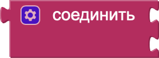
Соединить (текст1, текст2)
-– использовать результат для отображения
-– использовать результат для отображения
Длина (текст)
-– использовать результат для выполнения действия
-– использовать результат для выполнения действия
Если (текст является пустым)
-– выполнять действие
-– выполнять действие
Обрезать (текст)
-– использовать результат для выполнения действия
-– использовать результат для выполнения действия
Преобразовать в верхний регистр (текст)
-– использовать результат для выполнения действия
-– использовать результат для выполнения действия
Преобразовать в нижний регистр (текст)
-– использовать результат для выполнения действия
-– использовать результат для выполнения действия
Начинается с (строка, подстрока)
-– использовать результат для выполнения действия
-– использовать результат для выполнения действия
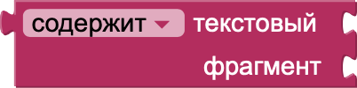
Если (строка содержит подстроку)
-– выполнять действие
-– выполнять действие
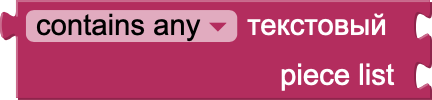
Если (строка содержит хотя бы одно значение)
-– выполнять действие
-– выполнять действие
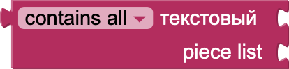
Если (строка содержит все значения)
-– выполнять действие
-– выполнять действие
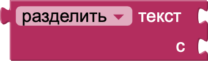
Разделить (текст, разделитель)
-– использовать результат для выполнения действия
-– использовать результат для выполнения действия
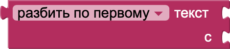
Разделить по первому (текст, разделитель)
-– использовать результат для выполнения действия
-– использовать результат для выполнения действия
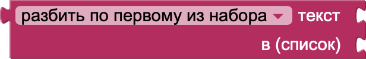
Разделить по первому из списка (текст, список разделителей)
-– использовать результат для выполнения действия
-– использовать результат для выполнения действия
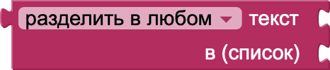
Разделить по любому (текст, список разделителей)
-– использовать результат для выполнения действия
-– использовать результат для выполнения действия
Разделить по пробелам (текст)
-– использовать результат для выполнения действия
-– использовать результат для выполнения действия
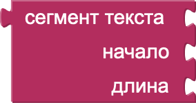
Сегмент (текст, начало, длина)
-– использовать результат для выполнения действия
-– использовать результат для выполнения действия
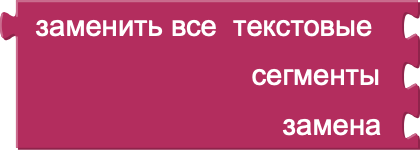
Заменить все (текст, что заменить, на что заменить)
-– использовать результат для выполнения действия
-– использовать результат для выполнения действия
Если (значение является строкой)
-– выполнять действие
-– выполнять действие
Обратить (текст)
-– использовать результат для выполнения действия
-– использовать результат для выполнения действия
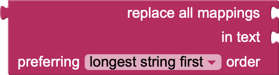
Заменить по карте (текст, карта замен)
-– использовать результат для выполнения действия
-– использовать результат для выполнения действия
Блоки 3-го уровня
"Текст"
-– использовать текст для отображения или обработки данных
-– использовать текст для отображения или обработки данных
Если (текст1 < / > / = / ≠ текст2)
-– выполнять действие
-– выполнять действие
Зашифровать текст (текст)
-– использовать для защиты данных
-– использовать для защиты данных